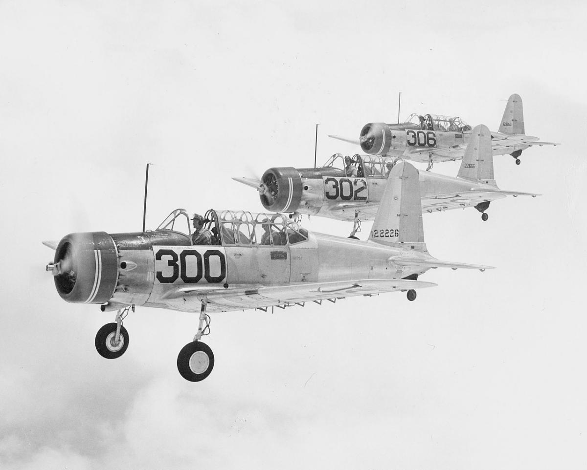

The Vultee
War Eagle Field, Lancaster · December 1943
They cleared the offices at Eagle Field on 5 December, drew class books and logbooks, and put the barracks bags on a truck. The bus rolled at midnight. At 8:30 the next morning they were in a valley with snow on the mountains, being met by upperclassmen who wanted hair cut short again and both feet flat on the floor at forty-five degrees while a man sang the Army Air Corps song from a chair.
Dear Folks, I left Eagle Field at 12:00 last nite & had a long ride on a bus and arrived here at 8:30 this morning without much sleep. Have been really jumping around today. We were met by a bunch of upper class student officers who had a lot of fun with us. Everyone has to get their hair cut real short again. […] Had a nice meal except for having to sit at attention with both feet flat on floor at 45° angle. Several had to stand up in their chairs & sing the Army air corps song etc. All quiet a bit of fun anyway. Kinda an initiation. Will close now. I think I will like it fine here. Love, Austin
Historical note — War Eagle Field and Polaris Flight AcademyA/C Austin H. Winn Polaris Flight Academy War Eagle Field Lancaster, CaliforniaWar Eagle Field sat about five miles from Lancaster, some eighty miles northeast of Los Angeles, in the Antelope Valley. Polaris Flight Academy, a civilian contractor, had opened there in July 1941 to train Royal Air Force and Royal Canadian Air Force cadets. After Pearl Harbor the school took Army Air Forces classes. Basic was the middle third of the pilot pipeline: heavier airplanes, radios, instruments, and a tighter military day than primary. Cadets from King City and Thunderbird Field arrived the same week.
Austin’s first letters from the new post still used the familiar greeting. He told Jack the planes were buzzing. He told his mother the floors were waxed hard enough to trip an inspecting officer, that hair could be no longer than an inch and a half, and that until flying started a man double-timed everywhere on the post.
They issued the cold-weather kit on the 7th: a sheep-lined leather coat, zippered pants, gloves, boots, a light jacket, a cotton flying suit, sweater, sunglasses, and school books. Electric razors were banned after 7:00 a.m. because they interfered with the radios in the airplanes. The papers said the conferences of Stalin, Roosevelt, and Churchill had been a success. Austin figured his 1943 pay at $50 a month for six months and $75 for five — $675 before the deductions for insurance, clothing, and “grass seed.”
Historical note — 7 December 1943It was two years to the day after Pearl Harbor. The conferences were Cairo (22–26 November) and Tehran (28 November–1 December), the first time Roosevelt sat with Stalin. Out of Tehran came agreement that a cross-Channel invasion would come in 1944 and that the Soviet Union would enter the war against Japan once Germany was finished. None of that detail was in the barracks yet. What reached War Eagle was the sentence Austin used: the meetings had been a success.
Dear folks, I had my first ride in the Vultee today. Boy was it a different feeling altogether than the Ryan's - you feel like you're in a big Cadillac floating around. They are so heavy the wind doesn't toss them around, just like getting out of a red light V-8 Ford into a great big Buick. Think I'll like it O.K. Only flew around the pattern today as an introduction to it. There are so many instruments to watch too. Love - Austin

Historical note — the Vultee BT-13 ValiantThe basic trainer was the Vultee BT-13 Valiant, called the Vultee in every letter Austin wrote that month. It was a two-seat, low-wing monoplane with a 450-horsepower Pratt & Whitney radial, a greenhouse canopy, a radio, and a full instrument panel. Closed cockpit and a heater: no more helmet and goggles in the open air of the Ryan. Cadets said the BT-13 vibrated until fillings hummed. Austin’s comparison was the one that would have made sense at Cherry — out of a Ford and into a Buick.
His instructor was Mr. Cattron, “the flying Dutchman.” The other names in the four-ship group were Morey, Munoz, and Weinrich. Ground school now included radio procedure as well as meteorology, navigation, and code. A weekly average below 70 cost open post; below 80 meant night school. The field, he was told, had just turned out its 15,000th combat pilot. An RAF officer was squadron commander.
On the radio they practiced the call he sent home so the family could hear it:
Dear Mother & all, […] We talk from plane to plane & plane to ground at any time we want to. We have special communication procedures to follow - two three nine as: Hello Eagle Tower, this is no 239 Out Local Over They answer "Two Three Nine from Eagle Tower Roger". That means go ahead. […] No I'm not flying the P-39 that you sent a picture of. I may at the next base though. I flew a PT 22 at Eagle & a BT 13 here at War Eagle. Love to All, Austin
Historical note — reading the airplane codesPT-22 was the Ryan Recruit at Dos Palos: Primary Trainer, model 22. BT-13 was the Vultee at Lancaster: Basic Trainer, model 13. A P-39 Airacobra was a fighter, not a trainer; his mother had sent a picture of one. That airplane, if it came at all, would come after advanced. “Roger” on the radio meant the message was received. “Over” meant the other station could talk. Tower calls used the ship’s number, not the man’s name.
Pecans arrived from home. Christmas dinner at the field was turkey, dressing, giblet gravy, mince pie with brandy sauce, and carols afterward. Edna sent a crash bracelet. He soloed the Vultee first in his group, off a 3,000-foot auxiliary runway. Another cadet scraped a wingtip on takeoff and walked away. The plane was grounded; they drew another and kept flying.
Dear Mother & Sir, […] Boy you should have been here to our Christmas Dinner tonight […] We really had the nicest meal ever & sang Christmas songs afterwards. We are getting passed tomorrow afternoon after finishing flying & ground school. Edna sent me a crash bracelet. Almost every Cadet wears one - a little chain bracelet with a name plate on it. […] I have been flying the plane solo for a day or two. It's a lot more to this one than the little light one. I was the first one of our group to solo here also. […] We have a little dog here in the room with us tonite. His name is "Tailwheel". […] When we first arrived here, he's part of our initiation. The upper class made us salute him every time we saw him & we couldn't touch him either - all that is over now though. We're waiting for the next class to come in With Worlds of Love, Austin
Historical note — Christmas 1943A crash bracelet was a metal identity band worn in case a man went down. Cadets bought them, or girls sent them. The field dogs — Tailwheel, Polaris — belonged to the place the way mascots belong to ships. On Christmas Eve, far from Lancaster, President Roosevelt named General Dwight D. Eisenhower Supreme Allied Commander for the invasion of Europe. Austin spent the next afternoon and night in Los Angeles on a pass, missed Jack, and rode a bus back to Lancaster at 6:30 on the 26th.
Rain on the 29th grounded the Vultees. They would fly Saturday and Sunday if the weather allowed. Next week a cross-country was on the board: War Eagle to Mojave, Inyokern, Helendale, Daggett, and home — more than 250 miles of desert checkpoints. There was talk of a week at an Arizona field. He sent home a stack of Christmas cards and a copy of Bulaero, the magazine of the contract schools. Eddie Cantor was on the radio. The snow on the mountains was melting.
The year that had begun on the Dixieland, with a farm boy from Cherry hoping Daddy was feeling all right, ended in a valley north of Los Angeles, a heavier airplane waiting on the line.
Historical note — the year in briefIn twelve months Austin had gone from Route 2 mail at Cherry to a Technical School Squadron in a Miami Beach hotel, to a college classroom in Oshkosh, to classification at Santa Ana, to a Ryan at Dos Palos, to a Vultee at Lancaster. He had buried his father, been held over, been classified a pilot, and soloed twice. The war had turned at Stalingrad, in Tunisia, in Sicily, and in Italy. The next letter would be dated 1944.